L東京喰種
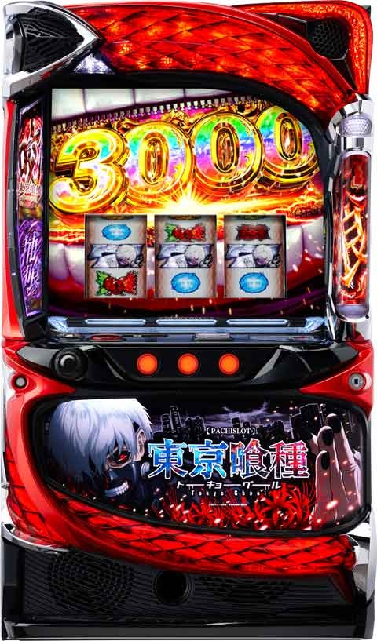
【天井情報】
CZ天井 600G+α CZかAT当選 AT天井 1200G+α AT当選
朝１回目のCZのみ200-250ゾーンが天井
【リセット判別】
朝イチCZハマリが200-250ゾーン抜けたら据置濃厚
【有利区間について】
エンディング等で有利区間がリセットされた場合は上位CZ「有馬貴将ジャッジメント」に突入
有利区間切れ条件 差枚プラスで上位CZ突入時
狙い目
【リセット狙い】
→攻めた0Gからリセ狙いはこちらへ
導入初期に比べ設定状況が厳しくなっている可能性を考慮しつつ、機械割104-105%とされるリセット狙いの押し引きを解説します。
リセット狙いの立ち回り
リスクを抑え、堅実に立ち回るスタイルです。
- 0スルー: CZ当選まで続行。
- 1スルー:
- 0スルー時に50G・150Gでの前兆やチャンスモード以上の示唆がなければ、100G～150Gのゾーンを回さずにヤメ。
- 2スルー:
- 基本的に1スルー時と同様、0・1スルー時に強い示唆がなければ100G～150Gのゾーンは回さずにヤメ。
- 【例外】: 1回目・2回目のCZが両方とも100G～150Gのゾーンで当選した場合、天国ループの可能性があるため100G～150Gのゾーンまで回します（「2時46分」出現時は即ヤメ）。
- 3スルー: AT当選まで続行。
【前兆の判断基準】
「東京上空」の前兆ステージへ移行した場合を「前兆有り」と判断します。ただし、レア役からの前兆とタイミングが重なると判断が難しくなるため注意が必要です。※リセット狙い時の押し引きが変更する可能性あります。CZ失敗後のアイキャッチで押し引きになりそうです。現在サンプルを集めてます。
カネキ、各キャラグール化→100ゾーンまで
トーカ、ヒナミ→即やめ
AT間天井狙い
※AT間のゲーム数は実ゲーム数を基準とします。喰種ポイントを中心に押し引きして狙います。
喰ポイント5pt以下想定
- 0～2スルー: 750Gから（CZ間0G想定）
- 3スルー: 500Gから（CZ間0G想定）
ボーダー調整（0～2スルー時）
- CZ間100Gハマり → 700Gから
- CZ間200Gハマり → 640Gから
喰ポイント6-8pt狙い目
- 上記の「5pt以下想定」よりも少しボーダーを下げて狙うことが可能です。
- 目安としてはAT間を100Gくらいボーダー下げる感じ。
喰ポイント9-13pt狙い目
- 駆け抜け後:
- 1スルー以上 かつ AT間500G以上ハマリでAT当選まで。
- 2スルー以上: AT間300G以上ハマリでAT当選まで。
- 駆け抜け後以外:
- 1スルー: AT間650G以上からAT当選まで。
- 2スルー以上: AT間500G以上ハマリでAT当選まで。
【注意】
喰ポイントが14ptを超えると解放率が下がるため、14pt以上で解放されなかった場合は「5pt以下想定」のボーダーで立ち回るのが安全です。現在、示唆（保持示唆大や、獲得する所で獲得しない＝ほぼポイントMAXなど）が浸透してきており、期待値表ほど期待値が積めないケースが増える事を想定しボーダーを高めに設定してます。
CZ間天井狙い
※こちらは液晶ゲーム数を基準とした狙い目です。
※スイカ成立で液晶ゲーム数が進むため、実際のハマりゲーム数とは乖離する点に注意してください。
※喰ポイントが6pt以上の場合は、AT間天井狙いも視野に入れてボーダーを調整しましょう。
① 朝イチ（リセット後）
- 0スルー: 20Gから
- 1～2スルー: 300Gから
- 3スルー以降: 0Gから
② AT後
- 0スルー: 400Gから
- 1スルー: 300Gから
- 2スルー: 200Gまたは300Gから
- 3スルー以降: 50Gから
ゾーン狙い
※こちらも液晶ゲーム数を基準とした狙い目です。
- 100ゾーン狙い (140Gでヤメ想定)
- 狙える条件:
- 2スルー以降
- 前回、前々回のCZが共に100G～150Gのゾーンで当選している
- 上記条件を満たす台を80Gから狙う。
- それ以外: 基本的に狙えません。
- 狙える条件:
有利区間切れ狙い
- 有利区間が切れることによる恩恵を狙う立ち回りはできません。
- むしろ、差枚数が大きくマイナス（凹んでいる台）の方が、AT性能を最大限に発揮しやすく、結果的に機械割が上がる傾向にあります。
- 目安として、差枚が-3000枚未満の台であれば、各種天井狙いのボーダーを10G～30G程度下げてみるのも一つの戦略です。
CZ終了画面の示唆と立ち回り
CZ終了画面の色はモードを示唆しています。見逃さずに次回の押し引きに役立てましょう。
- 黄色: 300GからCZ当選まで。
- 緑色: 100GからCZ当選まで。
- 赤色: 0GからAT当選まで（天国モード濃厚）。
- 天国で当選した場合はヤメ。
- 天国で非当選だった場合は、次回天国移行の可能性を考慮して再度天国をフォロー。
- 紫色: 0Gから天国当選まで（天国モード以上濃厚）。
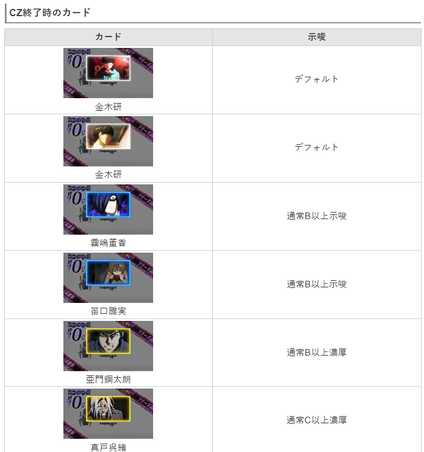
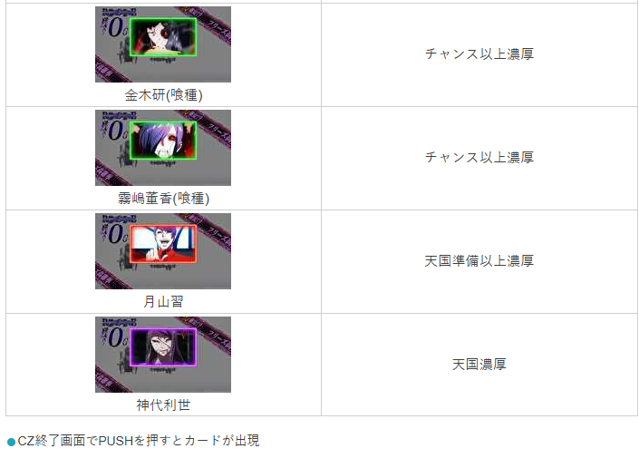
やめ時
CZ後は1ゲーム回してやめ
AT後は11-15Gくらい回し即前兆の有無を確認してやめ
喰ポイントについての詳細考察
喰ポイントの仕様を深く理解することで、より有利な立ち回りが可能になります。
① ポイント獲得契機
- CZ失敗時
- AT駆け抜け時
上記タイミングで喰ポイントを各1ptずつ獲得するのが基本と考えられます。
引き戻しゾーンからのATも1戦目からスタートするため、駆け抜け時は同様に1pt獲得すると推測されます。
② ポイント解放履歴の推測方法
喰ポイントの解放履歴は、データカウンターの初回AT信号（喰種バトル）の獲得枚数からおおよそ推測することが可能です。ただし、確実に見抜くことはできないため、複数のパターンを想定して立ち回る必要があります。
- 基本パターン:
- 初回ATの獲得枚数が60～80枚以下の場合、ポイント解放があった履歴と判断できます。
- 特に50枚未満の場合は、ほぼ解放濃厚と考えてよいでしょう。
- 逆に100枚以上の枚数を獲得している場合は、ポイント未解放の可能性が高いです。
- 立ち回り別の考え方:
- 一律での判断: 「70枚以下」をポイント解放の基準とする。
- 慎重派の判断: 「100枚以下」は全て解放済みとみなし、より安全なゲーム数から狙う。
- ポイント数を考慮した応用判断:
- 7pt以下の場合 → 70枚以上で未解放と想定。
- 8pt以上の場合 → 100枚以上で未解放と想定。
ポイント数が少ないうちは解放されにくいことを考慮した、より高度な推測方法です。
解放演出
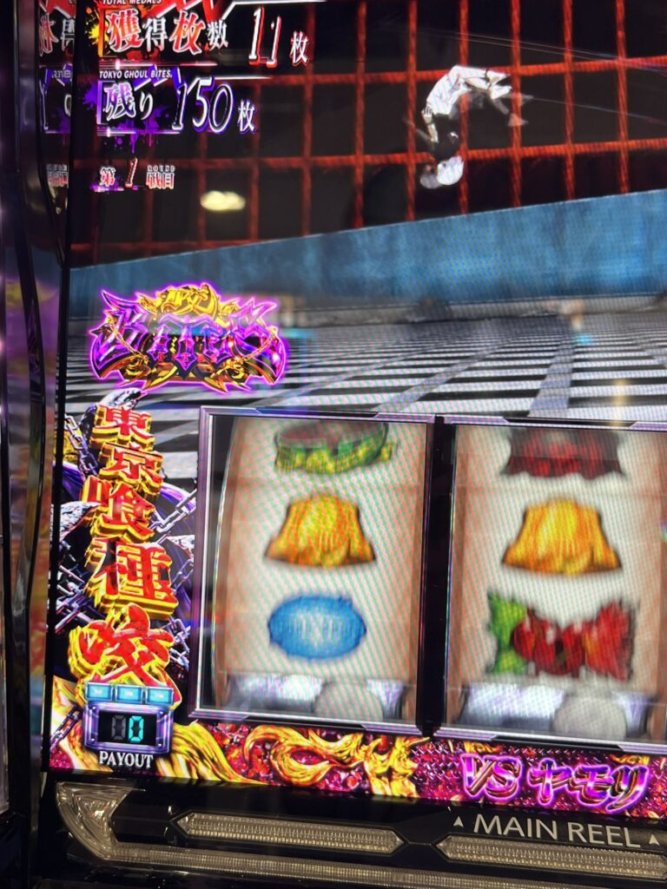
③ ポイント解放のタイミング
喰ポイントの解放率は、所持ポイント数に応じて段階的に上がっていくと推測されます。
- 5～7pt: このあたりから少しずつ解放され始める。
- 8～9pt: 解放率が段階的に上昇。
- 10～13pt: 最も解放が期待できるゾーン。
- 14pt以上: 解放率が下がる可能性や、履歴からでは分からないタイミングで解放している可能性があります。
【補足】ポイント獲得は常に1pt固定ではなく、示唆内容によって1～5ptのような振り分けが存在する可能性も考えられます。
④ 「AT直撃」と「エピソードボーナス」の見分け方
データカウンター上、どちらも「AT直撃」として履歴が残りますが、獲得枚数で見分けることが可能です。
- エピソードボーナス: 獲得枚数が100枚固定のため、履歴上は100～110枚となります。
- エピソードボーナス直後のATが1セットで終了した場合、駆け抜け扱いとなります。
- 19:30がエピソード濃厚履歴で、一見2連に見えるが107枚の部分は初当たり(ボーナス100枚)獲得履歴です。19:32からAT１セット目開始です。これは開始後駆け抜けしています。
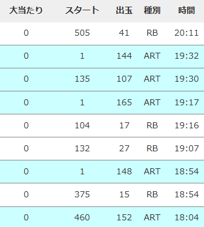
- AT直撃: 上記以外の枚数（例: 150枚など）はAT直撃と判断できます。
- こちらも1セットで終了した場合は駆け抜け扱いです。
- 10:44で引き戻し(直撃も同様)次にART(BB,AT)信号上がっていないのでこれは駆け抜け履歴です。
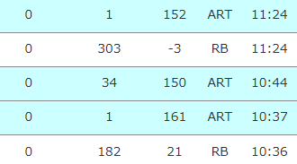
⑤ 所持ポイントの示唆（推測）
CZ失敗時の挙動から、内部の所持ポイントを推測できる可能性があります。
- ある程度ポイントが溜まっている状態でCZに失敗した際、喰ポイント獲得の示唆が発生しなかった場合は、内部的にポイントがMAXまで溜まっている（これ以上獲得できない状態）可能性があります。
内部保持ポイントが大と思われる示唆
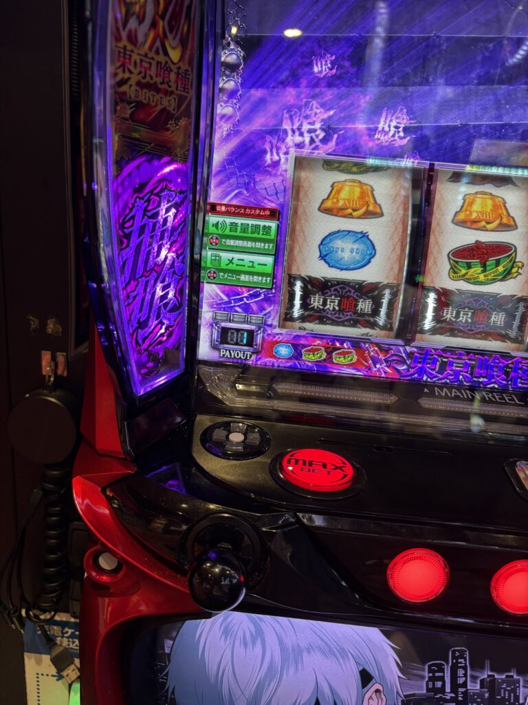
蓄積演出中
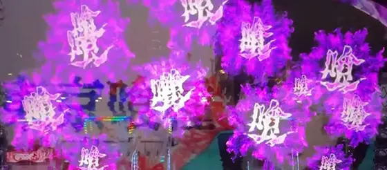
蓄積演出大
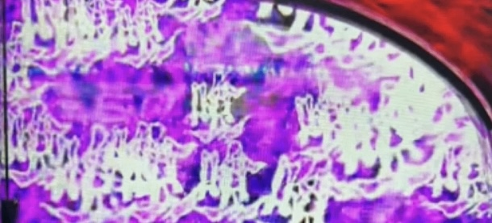
有馬貴将ジャッジメント失敗後の狙い目
上位CZ「有馬貴将ジャッジメント」失敗後は、大きな狙い目となる可能性があります。
狙い方
- 失敗後は天国モード濃厚と推測されるため、0Gから100G～150Gのゾーンまで打つ価値がありそうです。
失敗後の見抜き方
ジャッジメント失敗は、データカウンターや台の挙動から推測することができます。
- G数カウンターのズレ: データカウンターのゲーム数と液晶ゲーム数に5Gまたは6Gのズレが発生している場合、ジャッジメント失敗後である可能性が高いです。
- AT履歴からの推測:
- 差枚が+2400枚前後でATが終了している。
- かつ、データカウンターに上位CZ成功を示す履歴（例: 16:29 ART 3G当選など）がない。
- 上記条件を満たす場合、エンディング到達→上位CZ失敗のルートを辿った可能性が高いと判断できます。
【有利区間について】
差枚がプラスの状態で上位CZに突入した場合、その時点で有利区間がリセットされることが濃厚です。
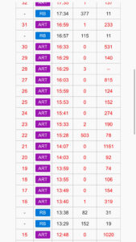
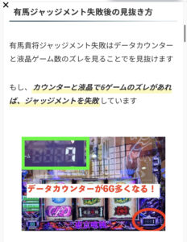
【即前兆について］
AT終了後の即前兆からのハズレでチャンスモード以上濃厚
液晶180GくらいからCZ当選まで打てそう
【モードと規定ゲーム数】
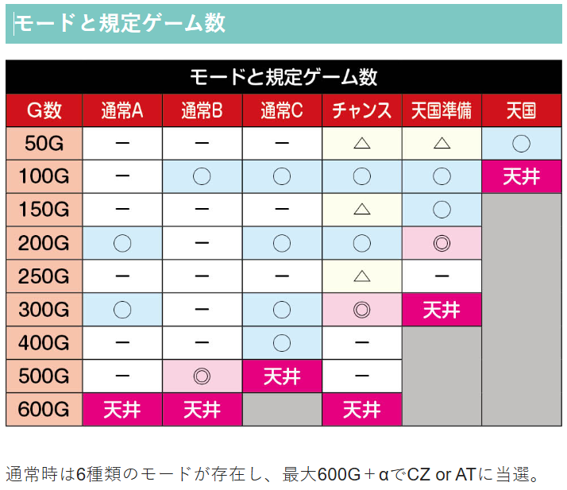
【アイキャッチ示唆】
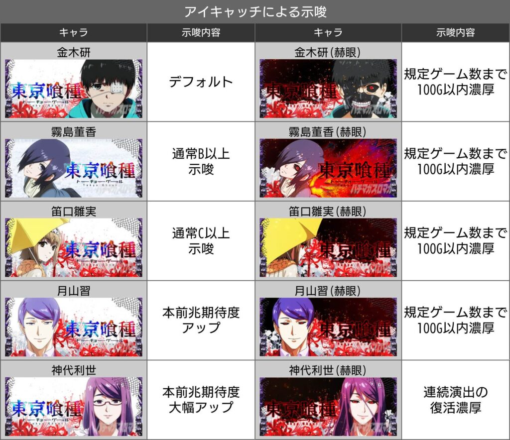
【招待状の示唆】 暫定
３時までに 300G以内？
２時までに 200G以内？
今すぐ 次の前兆で当選？
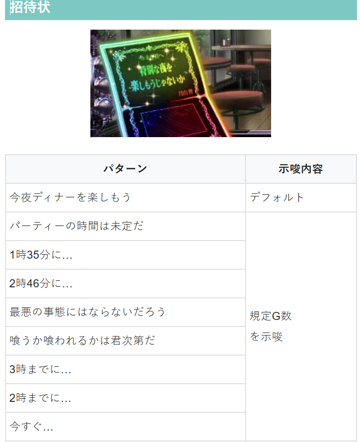
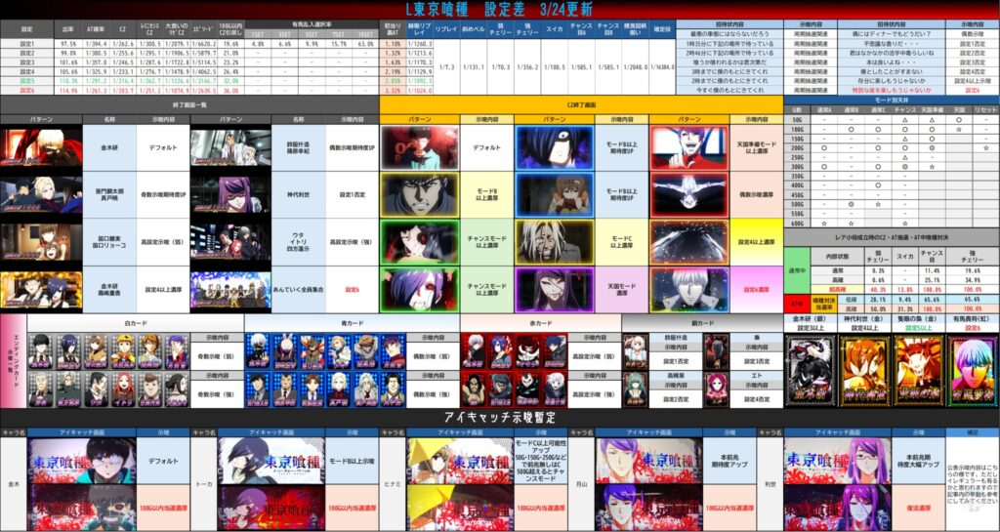
参考元
 購買部
購買部基本情報
- メーカー: スパイキー
- 機械割: 97.5% 〜 114.9%
- 導入開始日: 2025年02月03日（月）
- ゲーム性概要: ●大人気作品「東京喰種」がスマスロで登場！ ●通常時はゲーム数消化とレア役でCZを抽選 ●ATは純増4.0枚/Gの差枚数管理型 ●喰種対決勝利で特化ゾーン「BITES」に移行 ●完走orVS有馬成功で有馬貴将ジャッジメント獲得 ●有馬貴将ジャッジメント成功で上乗せ300枚〜2000枚！


打ち方
打ち方・小役
打ち方（小役狙い）
［最初に狙う絵柄］

左リール上段付近にBARを目押し。スイカがスベってきた場合以外は、中＆右リールフリー打ちでOKだ。
［スイカ停止時］

中リールにスイカを目押し（BAR目安）。右リールは取りこぼしがないのでフリー打ちで消化しよう。
［レア役の停止例］

解析情報通常時
小役関連
小役確率（設定1）
| 小役 | 確率 |
|---|---|
| リプレイ | 1/7.3 |
| 斜めベル | 1/131.1 |
| 弱チェリー | 1/70.3 |
| スイカ | 1/100.5 |
| チャンス目A | 1/585.1 |
| チャンス目B | 1/585.1 |
| 強チェリー | 1/356.2 |
| 確定チェリー | 1/16384.0 |
| 喰揃い | 約1/2048 |
※レア役の合算は1/31.5
スイカ成立時の加算ゲーム数振り分け
通常時はスイカ成立で10G以上のゲーム数が加算される。

スイカ成立時の加算ゲーム数振り分け
| 加算ゲーム数 | 振り分け |
|---|---|
| 10G | 約74％ |
| 100G | 約25％ |
| 600G（MAX） | 約1％ |
内部状態関連
赫眼状態

下段リプレイ揃いから突入するチェリーの高確状態。通常時〜AT中まで、いかなるタイミングでも突入する可能性がある。 滞在中は押し順からもチェリーが停止するため、突入タイミング次第で様々な恩恵を得ることができる。
赫眼状態 概要
| 項目 | 内容 |
|---|---|
| 当選契機 | 下段リプレイ揃い |
| 継続ゲーム数 | 10Gor20Gor30Gor50G |
| 滞在中の恩恵 | チェリー確率が大幅にアップ |
| 滞在中のレア役確率 | 1/2.6 |
赫眼状態の保証ゲーム数振り分け
| 保証ゲーム数 | 振り分け |
|---|---|
| 10G | 59.37% |
| 20G | 35.94% |
| 30G | 3.13% |
| 50G | 1.56% |
高確・超高確移行率
通常時には、CZやエピソードボーナス当選率に影響する通常・高確・超高確が存在。リプレイや弱チェリーで昇格が抽選され、夕方ステージや夜ステージで高確以上の滞在が示唆される。

高確・超高確移行率
| 移行先 | リプレイ | 弱チェリー |
|---|---|---|
| 通常→高確 | 0.78% | 39.06% |
| 通常→超高確 | 0.05% | 1.56% |
| 高確→超高確 | 1.56% | 50.00% |
モード
通常モード概要
通常時には6種類のモードがあって、規定ゲーム数（スイカ時の加算含む）のCZ・エピソードボーナスの当選テーブルが変化。 モード移行契機はCZ失敗時で、天国以外は転落の可能性がないため、上位モードの示唆が出た場合は次回も早いゲーム数でのCZ当選に期待できる。 また、AT駆け抜け時は通常B以上濃厚になるところもポイントだ。 ※AT駆け抜け…AT中に特化ゾーンに非当選で駆け抜けた場合
通常モードごとのCZ天井
| モード | CZ天井 |
|---|---|
| 通常A | 600G |
| 通常B | 600G |
| 通常C | 500G |
| チャンス | 600G |
| 天国準備 | 300G |
| 天国 | 100G |
※液晶右下に表示されたゲーム数が対象（実ゲーム数ではない）
モードごとの規定ゲーム数分布（テーブル）
| ゲーム数 | 通常A | 通常B | 通常C |
|---|---|---|---|
| 50G | － | － | － |
| 100G | － | ◯ | ◯ |
| 150G | － | － | － |
| 200G | ◯ | － | ◯ |
| 250G | － | － | － |
| 300G | － | ◯ | ◯ |
| 400G | ◯ | － | ◯ |
| 500G | － | ◎ | 天井 |
| 600G | 天井 | 天井 | |
| ゲーム数 | チャンス | 天国準備 | 天国 |
| 50G | △ | △ | ◯ |
| 100G | ◯ | ◯ | 天井 |
| 150G | △ | ◯ | |
| 200G | ◯ | ◎ | |
| 250G | △ | － | |
| 300G | ◎ | 天井 | |
| 400G | － | ||
| 500G | － | ||
| 600G | 天井 |
※液晶右下に表示されたゲーム数が対象（実ゲーム数ではない）
次回チャンスモード以上移行期待度
| 状況 | 100GでCZに当選した後 | 200GでCZに当選した後 |
|---|---|---|
| AT駆け抜け時 | 57.7% | 60.9% |
| 非AT駆け抜け時 | 65.3% | 44.3% |
※駆け抜け…BITESや特化ゾーンに当選しなかった場合（上乗せや喰種対決はOK）
100Gや200GでCZに当選した場合はチャンスモード移行のチャンス。 また、天国モード滞在中のCZ当選後は約50%でチャンスモード以上に移行する。
CZ（レミニセンス・大喰いの利世）
CZ確率 （レミニセンス・大喰いの利世合算）
CZおよびエピソードボーナスは高設定ほど当選しやすい。
レミニセンス

おもに押し順ベル・レア役でATを抽選する8G間のCZ。突入画面でPUSHボタンを押せば、告知モード（通常のモードor完全告知）を変更することができる。 最終ゲームでレア役を引いた場合は成功濃厚となる。
レミニセンス概要
| 項目 | 内容 |
|---|---|
| 当選契機 | 規定ゲーム数消化、レア役の一部 |
| 継続ゲーム数 | 8G |
| AT期待度 | 約52% |
| 消化中の抽選 | 成立役に応じてATを抽選 |
成立役ごとのAT当選率
| 役 | 1～7G間 | 最終ゲーム（8G目） |
|---|---|---|
| リプレイ | 0.1%未満 | 0.1%未満 |
| 斜めベル | 10.94% | 10.94% |
| 押し順ベル | 10.94% | 10.94% |
| 弱チェリー | 40.61% | 100% |
| スイカ | 40.61% | 100% |
| 強チェリー | 100% | 100% |
| チャンス目 | 100% | 100% |
大喰いの利世

リプレイ・ベル・レア役でATを抽選する高期待度CZ。 最終ゲームでのリプレイ・斜めベル・レア役は成功濃厚だ。
大喰いの利世概要
| 項目 | 内容 |
|---|---|
| 当選契機 | 規定ゲーム数消化、レア役の一部 |
| 継続ゲーム数 | 8G |
| AT期待度 | 約75% |
| 消化中の抽選 | 成立役に応じてATを抽選 |
成立役ごとのAT当選率
| 役 | 1～7G間 | 最終ゲーム（8G目） |
|---|---|---|
| リプレイ | 26.56% | 100% |
| 斜めベル | 10.94% | 100% |
| 押し順ベル | 10.94% | 10.94% |
| 弱チェリー | 100% | 100% |
| スイカ | 100% | 100% |
| 強チェリー | 100% | 100% |
| チャンス目 | 100% | 100% |
本前兆中の昇格抽選
CZの本前兆中は、レア役成立時に種別の昇格を抽選。昇格順はレミニセンス→大喰いの利世→エピソードボーナスになる。
もちろん、最初から大喰いの利世だった場合、昇格すればエピソードボーナスに昇格する。
喰ポイント
喰ポイント解説

AT終了後やCZ失敗時などに獲得するポイントで、実戦上、規定数まで貯まった時は、AT当選時に解放してBITESを獲得している。
規定ゲーム数消化
規定ゲーム数ごとのCZ抽選

通常時は滞在モードを参照して、50Gor100G消化ごとにCZを抽選。基本的にCZ当選時は前兆の東京上空ステージを経て告知される。
規定ゲーム数の期待度分布
| ゲーム数 | 通常A | 通常B | 通常C |
|---|---|---|---|
| 50G | － | － | － |
| 100G | － | ◯ | ◯ |
| 150G | － | － | － |
| 200G | ◯ | － | ◯ |
| 250G | － | － | － |
| 300G | － | ◯ | ◯ |
| 400G | ◯ | － | ◯ |
| 500G | － | ◎ | CZ天井 |
| 600G | CZ天井 | CZ天井 | － |
| ゲーム数 | チャンス | 天国準備 | 天国 |
| 50G | △ | △ | ◯ |
| 100G | ◯ | ◯ | CZ天井 |
| 150G | △ | ◯ | － |
| 200G | ◯ | ◎ | － |
| 250G | △ | － | － |
| 300G | ◎ | CZ天井 | － |
| 400G | － | － | － |
| 500G | － | － | － |
| 600G | CZ天井 | － | － |
※設定変更後は特殊モードに移行してCZ天井が200Gに短縮
ゲーム数は1G消化で1G進むが、スイカ時などに加算されるパターンもある。
100G＋α以内のCZ当選率
※全モードを考慮した平均値（朝イチを除く）
CZ・AT当選率
CZorAT当選率 （設定1）
高確中の強レア役なら当選のチャンス。超高確中は弱レア役でもチャンス、強レア役ならCZ濃厚だ。
［弱チェリー］CZ当選率
弱チェリー契機のCZ当選率は高設定ほど高い。
ゲーム数テーブル＆モード
ゲーム数消化時の前兆有無別ポイント
| ゲーム数 | 前兆なし | 前兆発生かつ 前兆ステージ移行 | 前兆発生かつ 前兆ステージ非移行 |
|---|---|---|---|
| 50G | デフォルト | CZ以上に期待かつ 天国モード濃厚 | チャンス以上濃厚 |
| 100G | 一 | デフォルト | 天国準備濃厚 |
| 150G | デフォルト | CZ以上濃厚 | 通常B以上濃厚 |
| 200G | 天国準備濃厚 | デフォルト | 通常B以上の 期待度アップ |
| 250G | デフォルト | CZ以上濃厚 | 通常C以上濃厚 |
| 300G | 一 | デフォルト | チャンス濃厚 |
| 400G | 通常C濃厚 | デフォルト | デフォルト |
| 500G | 一 | デフォルト | チャンス濃厚 |
| 600G | 一 | CZ以上濃厚 | CZ以上濃厚 |
50Gのゾーンで前兆ステージ（東京上空ステージ）へ移行した場合、CZに当選しなくても天国濃厚なので、100Gのゾーンまでに必ずCZ以上に当選。ほかにも前兆の有無で天国準備滞在濃厚となるゲーム数も多いので、しっかりとチェックしておこう。
直撃抽選
AT直撃当選確率
高設定ほどAT直撃しやすい。AT引き戻しや天井到達時を除くエピソードボーナス非経由のAT当選＝AT直撃だ。
演出動画
ロングフリーズ
確定チェリーの一部で発生。大量の枚数を獲得したうえでATへ直行する。
フリーズ
ロングフリーズ


ロングフリーズ性能
| 項目 | 内容 |
|---|---|
| 発生契機 | 通常時の確定チェリー成立時の約1/6 |
| 恩恵 | 初期枚数2000枚のATに突入 |
| 期待獲得枚数 | 約4400枚 |
解析情報ボーナス時
エピソードボーナス
エピソードボーナス概要

CZではなくエピソードボーナスに当選した場合はAT濃厚。消化中はATの差枚数上乗せが抽選される。
東京喰種咬（AT）
AT概要

差枚数管理型のATで、開始時に「喰種対決」の対戦相手を決定。消化中はゲーム数消化やレア役で「喰種対決」を抽選、レア役での枚数直乗せもある。有馬乱入（対戦相手が有馬）時の喰種対決に成功すれば、有馬貴将ジャッジメントを獲得できる。
東京喰種咬（AT）概要
| 項目 | 示唆 |
|---|---|
| 当選契機 | 通常時からの直撃、CZ成功、 エピソードボーナス後など |
| 初期枚数 | 約150枚 |
| 純増 | 約4.0枚/G |
| 消化中の抽選 | 高確移行、枚数上乗せ、 喰種対決、特化ゾーン |
| その他 | VS有馬成功やエンディング到達で 有馬貴将ジャッジメント獲得 |
規定ゲーム数ごとの喰種対決当選期待度分布
| ゲーム数 | 期待度 |
|---|---|
| 15G | △ |
| 30G | ◎ |
| 45G | △ |
| 60G | ◎ |
| 75G | ◯ |
| 90G | ◎ |
| 150G | 天井 |
※期待度は△＜◯＜◎
ゲーム数消化で喰種対決や高確移行に当選するため、ハズレやリプレイでいかに長引かせることができるかも重要になる。
［導入エピソード］

AT開始時orBITES終了時は、約10Gの導入エピソードで対戦相手を告知。消化中はレア役で差枚数の上乗せを抽選する。 赫眼状態中は赫眼状態のゲーム数減算がストップするためお得だ。
高確移行率 （喰種対決の高確率状態）
| 役 | 移行率 |
|---|---|
| スイカ | 50.00％ |
| 弱チェリー | 31.25％ |
| 強チェリー | 75.00％ |
| チャンス目 | 75.00％ |
レア役時は上乗せや喰種対決だけでなく、喰種対決の高確移行も抽選される。
喰種対決 当選率
| 役 | 通常滞在時 | 高確滞在時 |
|---|---|---|
| スイカ | 9.38% | 31.25% |
| 弱チェリー | 28.13% | 50.00% |
| 強チェリー | 65.63% | 100% |
| チャンス目 | 65.63% | 100% |
喰種対決高確率中はさらに当選期待度がアップする。
枚数上乗せ当選率
| 役 | 当選率 |
|---|---|
| 弱チェリー | 41.31% |
| スイカ | 18.75% |
| 強チェリー | 100% |
| チャンス目 | 100% |
| 確定チェリー | 100% |
枚数上乗せ当選時の枚数振り分け
| 枚数 | 弱チェリー | スイカ | 強チェリー | |
|---|---|---|---|---|
| 10枚 | 75.65% | － | － | |
| 20枚 | － | － | － | |
| 30枚 | 22.70% | － | 60.74% | |
| 50枚 | 0.47% | 58.33% | 32.81% | |
| 100枚 | 0.47% | 20.83% | 2.34% | |
| 200枚 | 0.24% | 8.33% | 2.34% | |
| 300枚 | 0.24% | 8.33% | 1.56% | |
| 500枚 | 0.24% | 4.17% | 0.20% | |
| 枚数 | チャンス目 | 確定チェリー | ||
| 10枚 | － | － | ||
| 20枚 | 68.95% | － | ||
| 30枚 | 17.19% | － | ||
| 50枚 | 6.25% | － | ||
| 100枚 | 6.25% | － | ||
| 200枚 | 0.78% | － | ||
| 300枚 | 0.39% | 50.00% | ||
| 500枚 | 0.20% | 50.00% |
強レア役は上乗せ濃厚、確定チェリーは300枚or500枚濃厚となる。
［リールロック発生で3桁枚数上乗せ］

上乗せ後にリールロックが発生すれば3桁枚数上乗せ！
追撃発生濃厚パターン
| パターン | 備考 |
|---|---|
| スイカ→＋10枚 | ＋500枚以上濃厚 |
| スイカ→＋20枚 | ＋300枚以上濃厚 |
| スイカ→＋30枚 | 追撃発生濃厚 |
| 弱チェリー→＋20枚 | ＋500枚以上濃厚 |
| チャンス目→＋10枚 | ＋500枚以上濃厚 |
| 強チェリー→＋20枚 | ＋300枚以上濃厚 |
| 確定チェリー→＋10枚 | ＋500枚以上濃厚 |
ちなみに、役不問で＋50枚で追撃が発生した場合は＋300枚以上濃厚になる。
有馬貴将の乱入選択率（設定1）
| AT | 選択率 |
|---|---|
| 1セット目 | 4.82% |
| 2セット目 | － |
| 3セット目 | 6.58% |
| 4セット目 | － |
| 5セット目 | 9.94% |
| 6セット目 | － |
| 7セット目 | 15.70% |
| 8セット目 | － |
| 9セット目 | － |
| 10セット目 | 62.96% |
10戦目までに必ず乱入が発生する。
ATレベル解説＆レベル性能
［4段階のATレベルで各種抽選値が変化］ AT開始時の対戦キャラ決定時にレベルA〜DのATレベルを抽選（対戦相手決定ごとに毎回レベルを抽選）。レベルによってゲーム数契機の喰種対決抽選、喰種対決中勝利抽選の数値が変化する。 レベルと対戦相手は完全リンクではないが、特等らはレベルC以上、亜門はレベルD濃厚だ。
対決レベルごとのゲーム数消化時・喰種対決当選率
| ゲーム数 | レベルA～C | レベルD |
|---|---|---|
| 15G | 6.25% | 6.25% |
| 30G | 40.63% | 40.63% |
| 45G | 3.12% | 6.25% |
| 60G | 25.00% | 21.87% |
| 75G | 3.12% | 3.12% |
| 90G | 12.50% | 12.50% |
| 150G | 9.38% | 9.38% |
30G以内での喰種バトル当選率は46.88%になる。
対決レベルごとの勝利書き換え当選率
| 役 | レベルA | レベルB | レベルC | レベルD |
|---|---|---|---|---|
| ハズレ | － | 2.34% | 9.77% | 23.44% |
| リプレイ | 40.63% | 60.02% | 84.38% | 100% |
| 斜めベル | 40.63% | 60.02% | 84.38% | 100% |
| 弱レア役 | 62.50% | 100% | 100% | 100% |
| 強レア役 | 100% | 100% | 100% | 100% |
AT引き戻し抽選
［AT終了後は設定に応じて引き戻しを抽選］ AT終了後（有馬貴将ジャッジメント失敗後を除く）はAT引き戻しを抽選していて、当選時はAT終了後しばらくして前兆ステージへ突入したり、連続演出へ移行してATへ復帰する。 高設定ほど優遇される抽選なので注目しておきたい。
AT引き戻し当選率
| 設定 | 当選率 |
|---|---|
| 1 | 7.81% |
| 2 | 7.81% |
| 3 | 9.38% |
| 4 | 10.94% |
| 5 | 12.50% |
| 6 | 15.23% |
喰種対決
喰種対決概要

レア役・ゲーム数消化で移行するバトル型CZで、対戦相手で期待が変化。消化中は成立役に応じて勝利を抽選、勝利すればBITES濃厚となる。
喰種対決 概要
| 項目 | 内容 |
|---|---|
| 当選契機 | 規定ゲーム数消化、レア役の一部 |
| 継続ゲーム数 | 4G |
| 平均確率 | 約1/49 |
| 平均勝利期待度 | 約50% |
| 消化中の抽選 | 成立役に応じて勝利を抽選 |
| 勝利時の恩恵 | BITES |
喰種対決の成功期待度
| 対戦相手 | 期待度 |
|---|---|
| 鯱 | 40.0% |
| 霧嶋絢都 | 47.0% |
| ヤモリ | 53.0% |
| 特等ら | 76.0% |
| 亜門 | 86.0% |
| 有馬貴将 | 67.0% |
［対戦相手の種類］

期待度は鯱＜霧嶋絢都＜ヤモリ＜特等ら＜亜門、AT導入部で決まった対戦相手とバトルする。
［有馬との対決］

有馬との喰種対決に成功すれば、有馬貴将ジャッジメントを獲得できる。
［昇格ゾーン］

勝利後、BITESへ行かずに昇格ゾーンに行けば大チャンス。 成功すれば超BITESへ、失敗してもBITESへ移行する。
勝利抽選＆ゲーム数契機の当選率（保留）
まず、当選契機役に応じて勝敗を抽選。その後、4段階の対決レベルに応じて、消化中の成立役で勝利書き換えを抽選する。 対決レベルによって喰種対決テーブルが変化するのもポイントだ。 レベルに応じて対戦相手が変化するので、基本的には高レベル＝期待度の高いキャラが選ばれやすくなる。
喰種対決当選契機役別・開始時の勝利当選率
| 勝利内容 | スイカ | 弱チェリー | 強チェリー | チャンス目 |
|---|---|---|---|---|
| BITES | 1.56% | 3.91% | 10.94% | 10.94% |
| 昇格ゾーン | 0.78% | 0.78% | 2.34% | 2.34% |
| 超BITES | － | － | 0.78% | 0.78% |
| トータル | 2.34% | 4.69% | 14.06% | 14.06% |
対決レベルごとの勝利書き換え当選率
レベルDは45G到達時の当選率が高いだけで、それ以外のゲーム数当選率は全レベル共通。
4G以内にいかにリプレイ以上を引けるかが勝利のためのポイントだ。
喰種対決本前兆中の抽選
喰種対決の本前兆中は、レア役で「勝利濃厚の喰種対決」への昇格を抽選。すでに勝利以上が濃厚である場合、昇格ゾーン（成功で超BITES）→超BITES→極BITESの順で昇格していく。

喰種対決勝利後の抽選
内部的な喰種対決勝利から報酬告知までの間は、喰種対決の本前兆中と同じく、レア役で報酬の昇格を抽選。昇格ゾーン（成功で超BITES）→超BITES→極BITESの順で昇格する。

BITES
BITES概要

小役が途切れない限り、毎ゲーム報酬がアップしていく報酬獲得ゾーン。レア役時は複数段階アップに期待できる。 ハズレを引くとアップさせた報酬を獲得して終了だが、約20%で再チャレンジできることもある。
BITES概要
| 項目 | 示唆 |
|---|---|
| 当選契機 | 喰種対決勝利時の一部 |
| 継続ゲーム数 | ハズレを引くまで |
| 消化中の抽選 | ハズレを引くまで毎ゲーム報酬がアップ、 ハズレを引いた時の報酬を獲得 |
| その他 | 上位ver.の超BITES・極BITESもあり |
超BITESは300〜3000枚、極BITESは2000枚or完走濃厚！
成立役ごとのルール
| 役 | 報酬のアップ段階 |
|---|---|
| リプレイ・ベル | 1段階アップ |
| 弱レア役 | 1～2段階アップ |
| 強レア役 | 2段階アップ |
| 確定チェリー | MAX報酬獲得 |
［BITES］報酬テーブル
| 獲得 | 報酬A | 報酬B | 報酬C | 報酬D | 報酬E |
|---|---|---|---|---|---|
| 1つ目 | 50枚 | 50枚 | 100枚 | 100枚 | 200枚 |
| 2つ目 | 100枚 | 50枚 | 200枚 | 100枚 | 300枚 |
| 3つ目 | 200枚 | 500枚 | 300枚 | 500枚 | 500枚 |
| 4つ目 | 300枚 | 500枚 | 500枚 | 1000枚 | 1000枚 |
| 5つ目 | 500枚 | 1000枚 | 1000枚 | 2000枚 | 2000枚 |
報酬ランク振り分け
| 報酬ランク | 通常のAT （CCGの死神非経由） | CCGの死神経由のAT |
|---|---|---|
| 報酬A | 71.9% | 79.7% |
| 報酬B | 10.9% | 9.4% |
| 報酬C | 9.4% | 6.3% |
| 報酬D | 4.7% | 3.1% |
| 報酬E | 3.1% | 1.6% |
CCGの死神を経由していた場合は、若干だが報酬ランクが冷遇される。
［超BITES・極BITES］報酬テーブル
| 獲得 | 超BITES | 極BITES |
|---|---|---|
| 1つ目 | 300枚 | 2000枚 |
| 2つ目 | 500枚 | － |
| 3つ目 | 1000枚 | － |
| 4つ目 | 2000枚 | － |
| 5つ目 | 3000枚 | － |
BITESでは5種類のテーブルで継続ごとに切り替わる報酬を決定。 超BITESと極BITESのテーブルは1つなので報酬は固定だ。
報酬テーブル昇格＆リトライ抽選
BITESの報酬テーブルは喰種対決の最終ゲーム（勝利時）のレバーON時に抽選＆決定。 次ゲームのBITES突入画面でレア役を引くとテーブルの昇格が抽選される。 また、 BITES終了時は約20%でリトライ抽選 がおこなわれ、当選し続ける限りBITESが継続する。
BITES突入ゲームのテーブル昇格率
| 役 | 昇格率 |
|---|---|
| スイカ | 約10％ |
| 弱チェリー | 約25％ |
| 強チェリー | 約47％ |
| チャンス目 | 約47％ |
| 確定チェリー | 超BITESへ（超BITES時は極BITESへ） |
BITES終了時のリトライ当選率
| タイミング | 当選率 |
|---|---|
| BITES終了時 | 約20％ |
［リトライ］

報酬の昇格段階振り分け
| 昇格 | ベル・リプ | 弱レア役 | 強レア役 | 確定チェリー |
|---|---|---|---|---|
| ＋1 | 100% | 50.0% | － | － |
| ＋2 | － | 50.0% | － | － |
| ＋3 | － | － | 100% | － |
| ＋4 | － | － | － | 100% |
強レア役は2段階アップ濃厚だ。
昇格ゾーン成功当選率
| 役 | 当選率 |
|---|---|
| その他 | 2.3% |
| 斜めベル | 34.4% |
| リプレイ | 34.4% |
| スイカ | 50.0% |
| 弱チェリー | 50.0% |
| 強チェリー | 100% |
| チャンス目 | 100% |
| 確定チェリー | 100% |
この世のすべての不利益は当人の能力不足は成立役に応じて成功（超BITES）を抽選する。

特化ゾーン（百足覚醒・隻眼の梟）
百足覚醒概要

5回の上乗せがおこなわれ、1回ごとにループ上乗せを抽選する。
百足覚醒 概要
| 項目 | 内容 |
|---|---|
| 当選契機 | AT中の喰揃いの一部 |
| 継続ゲーム数 | 上乗せ5回まで |
| 消化中の抽選 | 成立役に応じて上乗せ枚数・ループを抽選 |
| 期待獲得枚数 | 約300枚 |
隻眼の梟概要

1G完結の特化ゾーンで、成立役に応じて300枚or500枚or1000枚or2000枚を上乗せする。
隻眼の梟 概要
| 項目 | 内容 |
|---|---|
| 当選契機 | AT中の喰揃いの一部 |
| 継続ゲーム数 | 1G |
| 消化中の抽選 | 成立役に応じて上乗せ枚数を抽選 |
| 期待獲得枚数 | 約500枚 |
特化ゾーン当選時の振り分け
| 特化ゾーン | 振り分け |
|---|---|
| 百足覚醒 | 84.5% |
| 隻眼の梟 | 15.5% |
百足覚醒が当選していた場合でも、レア役などで1G目の昇格抽選に当選すれば「隻眼の梟」へ昇格する。
［百足覚醒］成立役ごとの上乗せ枚数振り分け 初回
| 上乗せ | その他 | 斜めベル | リプレイ | スイカ |
|---|---|---|---|---|
| なし | － | － | － | － |
| ＋10枚 | 71.83% | 34.38% | 34.38% | － |
| ＋20枚 | 14.06% | 25.00% | 25.00% | － |
| ＋30枚 | 14.06% | 21.88% | 21.88% | 53.13% |
| ＋50枚 | － | 18.75% | 18.75% | 18.75% |
| ＋100枚 | － | － | － | 18.75% |
| ＋200枚 | － | － | － | － |
| ＋300枚 | － | － | － | 9.38% |
| ＋500枚 | － | － | － | － |
| 上乗せ | 弱チェリー | 強チェリー | チャンス目 | 確定チェリー |
| なし | － | － | － | － |
| ＋10枚 | － | － | － | － |
| ＋20枚 | － | － | － | － |
| ＋30枚 | 53.13% | － | － | － |
| ＋50枚 | 18.75% | － | － | － |
| ＋100枚 | 18.75% | 43.75% | 43.75% | － |
| ＋200枚 | － | 21.88% | 21.88% | － |
| ＋300枚 | 9.38% | 21.88% | 21.88% | 50.00% |
| ＋500枚 | － | 12.50% | 12.50% | 50.00% |
ループ時
| 上乗せ | その他 | 斜めベル | リプレイ | スイカ |
|---|---|---|---|---|
| なし | 39.45% | － | － | － |
| ＋10枚 | 33.98% | 51.56% | 51.56% | － |
| ＋20枚 | 26.56% | 18.75% | 18.75% | － |
| ＋30枚 | － | 17.19% | 17.19% | 59.38% |
| ＋50枚 | － | 12.50% | 12.50% | 15.63% |
| ＋100枚 | － | － | － | 15.63% |
| ＋200枚 | － | － | － | － |
| ＋300枚 | － | － | － | 9.38% |
| ＋500枚 | － | － | － | － |
| 上乗せ | 弱チェリー | 強チェリー | チャンス目 | 確定チェリー |
| なし | － | － | － | － |
| ＋10枚 | － | － | － | － |
| ＋20枚 | 35.94% | － | － | － |
| ＋30枚 | 17.19% | － | － | － |
| ＋50枚 | 17.19% | － | － | － |
| ＋100枚 | 17.19% | 50.00% | 50.00% | － |
| ＋200枚 | － | 21.88% | 21.88% | － |
| ＋300枚 | 12.50% | 18.75% | 18.75% | 50.00% |
| ＋500枚 | － | 12.50% | 12.50% | 50.00% |
百足覚醒に関しては、初回時の上乗せが優遇される。
［百足覚醒］成立役ごとのループ当選率
| 役 | 当選率 |
|---|---|
| その他 | 60.5% |
| 斜めベル | 100% |
| リプレイ | 100% |
| レア役 | 100% |
※ループ当選率の合算は67.5%
［隻眼の梟］成立役ごとの上乗せ枚数振り分け
| 役 | ＋300枚 | ＋500枚 | ＋1000枚 | ＋2000枚 |
|---|---|---|---|---|
| その他 | 50.00% | 50.00% | － | － |
| 斜めベル | － | 50.00% | 50.00% | － |
| リプレイ | － | 50.00% | 50.00% | － |
| スイカ | － | － | 50.00% | 50.00% |
| 弱チェリー | － | － | 50.00% | 50.00% |
| 強チェリー | － | － | － | 100% |
| チャンス目 | － | － | － | 100% |
| 喰図柄 | 50.00% | 50.00% | ||
| 確定チェリー | － | － | － | 100% |
隻眼の梟中の上乗せ抽選値はCCGの死神と同じ。突入画面のレア役も上記の抽選が反映される。
有馬貴将ジャッジメント
有馬貴将ジャッジメント概要

成功すれば「CCGの死神」へ移行する5G間のCZ。AT中の有馬撃破時にストックされ、AT終了後に突入する。レア役はどこで引いても成功濃厚。最終ゲームはレア役だけでなく、斜めベル、リプレイ成立で成功濃厚になる。
有馬貴将ジャッジメント概要
| 項目 | 内容 |
|---|---|
| 当選契機 | 喰種対決の有馬勝利時、エンディング終了後 |
| 継続ゲーム数 | 5G |
| 平均勝利期待度 | 約61% |
| 消化中の抽選 | 成立役に応じてCCGの死神を抽選 |
失敗した場合は 100Gのゾーンで必ずCZに当選 するため即ヤメは避けよう。
CCGの死神
CCGの死神概要

ジャッジメント成功後に移行する1G間の上乗せ特化ゾーンで、300枚〜2000枚の上乗せを獲得できる。
CCGの死神概要
| 項目 | 内容 |
|---|---|
| 当選契機 | 有馬貴将ジャッジメント成功後 |
| 継続ゲーム数 | 1G |
| 消化中の抽選 | 300or500or1000or2000枚を上乗せ |
| その他 | 終了後は裏AT突入の大チャンス |
［上乗せ後はATへ］

上乗せした枚数を持ってATへ復帰。さらに裏AT突入にも期待できる。
上乗せ枚数のトータル割合
| 上乗せ | 割合 |
|---|---|
| ＋300枚 | 41.61% |
| ＋500枚 | 47.12% |
| ＋1000枚 | 9.32% |
| ＋2000枚 | 1.94% |
導光板のエフェクトが赤なら500枚以上、虹なら1000枚以上濃厚。抽選値は「隻眼の梟」とすべて同じ。
成立役ごとの上乗せ枚数振り分け
| 上乗せ | ＋300枚 | ＋500枚 | ＋1000枚 | ＋2000枚 |
|---|---|---|---|---|
| その他 | 50.0% | 50.0% | － | － |
| 斜めベル | － | 50.0% | 50.0% | － |
| リプレイ | － | 50.0% | 50.0% | － |
| スイカ | － | － | 50.0% | 50.0% |
| 弱チェリー | － | － | 50.0% | 50.0% |
| 強チェリー | － | － | － | 100% |
| チャンス目 | － | － | － | 100% |
| 中段チェリー | － | － | － | 100% |
斜めベルやリプレイでも半分が1000枚、弱レア役は1000枚以上、強レア役は2000枚濃厚だ。
開始画面の上乗せ枚数（内部的）
| 役 | 上乗せ枚数 |
|---|---|
| スイカ | ＋200枚 |
| 弱チェリー | ＋200枚 |
| 強チェリー | ＋1000枚 |
| チャンス目 | ＋1000枚 |
| 確定役 | ＋2000枚 |
開始画面でレア役を引いた場合は枚数上乗せ濃厚。開始画面では告知されず、次ゲームの上乗せゲーム数と合算され、まとめて告知される。
裏AT
裏AT概要

AT画面がネガポジ反転すれば裏AT濃厚。滞在中は喰種対決の勝利期待度が大幅にアップする。 CCGの死神経由時は裏AT突入のチャンスだ。
裏AT突入時の期待枚数は約3430枚だ（突入までに獲得した出玉を含む）。
AT当選時の裏AT突入率 （有馬貴将ジャッジメント非経由）
| 設定 | 確率 |
|---|---|
| 1 | 1.10% |
| 2 | 1.32% |
| 3 | 1.63% |
| 4 | 2.19% |
| 5 | 2.85% |
| 6 | 3.32% |
有馬貴将ジャッジメント非経由のAT当選時に裏AT突入を抽選。高設定ほど裏ATに突入しやすい。
ジャッジメント＆CCGの死神
裏AT突入率
レア役契機で成功した場合は裏AT濃厚。レア役以外でも裏ATに期待できる。

裏AT突入率
| 成功契機 | 突入率 |
|---|---|
| レア役以外 | 約40% |
| レア役 | 100% |
演出情報
通常時
ステージごとの示唆
| ステージ | 示唆 |
|---|---|
| 昼 | デフォルト |
| 夕 | 高確・前兆示唆 |
| 夜 | 高確・前兆示唆［強］ |
| 精神世界 | 超高確濃厚 |
［昼ステージ］

［夕ステージ］

［夜ステージ］

［精神世界ステージ］
精神世界ステージは超高確滞在が濃厚。 滞在ゲーム数は10〜30Gとなっており、レア役成立でCZ当選の大チャンスとなる。 CZの当否は当該ゲームで告知される。
招待状のCZ当選ゲーム数示唆
通常時、50G消化ごとに液晶左下に表示される月山招待状演出で、CZ当選までの残りゲーム数や設定を示唆。 青・緑・赤文字が残りゲーム数示唆、デフォルトを除いたその他のパターンが設定示唆となる。
［デフォルト］

［CZまでの残りゲーム数示唆］

招待状の規定ゲーム数示唆
| パターン | 示唆 |
|---|---|
| 最悪の事態には〜 | 600G否定 |
| 1時35分 | 残り100or300or500G以内示唆 |
| 2時46分 | 残り200or400or600G以内示唆 |
| 喰うか喰われるか〜 | 残り200G以内or500G以上示唆 |
| 3時まで | 残り300G以内濃厚 |
| 2時まで | 残り200G以内濃厚 |
| 今すぐ | 残り100G以内濃厚 |
3時まで以上招待状が出た場合は続行しよう。
［設定示唆］

アイキャッチの示唆
| キャラ | 示唆 |
|---|---|
| 金木研 | デフォルト |
| 霧嶋董香 | 通常B以上示唆 |
| 笛口雛実 | 通常C以上示唆 |
| 月山習 | 本前兆期待度アップ |
| 神代利世 | 本前兆期待度大幅アップ |
| 各キャラの喰種ver.（利世以外） | 100G以内のCZ当選濃厚 |
| 神代利世の喰種ver. | 復活濃厚 |
霧嶋董香や笛口雛実など、レアなキャラのアイキャッチが発生した場合は上位モード滞在の可能性が高い。喰種ver.はどのキャラでも100G以内のCZ当選濃厚だ。
［金木研］ 金木がデフォルト。

［霧嶋董香］

［笛口雛実］

［月山習］

［神代利世］

［金木研の喰種ver.］

［神代利世の喰種ver.］

CZ（レミニセンス・大喰いの利世）
CZ終了画面の滞在モード示唆
CZ終了画面でボタンをPUSHすると、表示されたエンドカードで滞在モードや設定が示唆される。

CZ終了時のエンドカード示唆
| カード | 示唆 |
|---|---|
| 金木研A | デフォルト |
| 金木研B | デフォルト |
| 霧嶋董香 | 通常B以上示唆 |
| 笛口雛実 | 通常B以上示唆 |
| 亜門鋼太朗 | 通常B以上濃厚 |
| 真戸呉緒 | 通常C以上濃厚 |
| 金木研（喰種） | チャンス以上濃厚 |
| 霧嶋董香（喰種） | チャンス以上濃厚 |
| 月山習 | 天国準備以上濃厚 |
| 神代利世 | 天国濃厚 |
| 鈴屋什造 | 偶数設定濃厚（設定示唆） |
| 梟 | 設定4以上濃厚（設定示唆） |
| 有馬貴将 | 設定6濃厚（設定示唆） |


東京喰種咬（AT）
［喰種対決］演出法則
| パターン | 法則 |
|---|---|
| リプレイ・レア役時の カットイン | ● 青・赤・虹の3種類 ● 赤以上なら勝利濃厚 ● 虹は勝利＋昇格ゾーン濃厚 |
| 画面振動 | ● 期待度アップ |
| シェイクビジョン | ● リプレイorレア役成立濃厚 ● リプレイorレア役否定で勝利濃厚 |
| モノクロバトル | ● 勝利濃厚 |
| 押し順ナビ | ● 押し順からリプレイが揃えば勝利濃厚 |
［カットインに注目］

［エピソードボーナス］演出法則
| パターン | 法則 | |
|---|---|---|
| PUSHボタン | チャンスアップ発生 | 上乗せ濃厚 |
| PUSHボタン | 赤PUSH | ＋100枚以上濃厚 |
| PUSHボタン | 赤デカPUSH | ＋200枚以上濃厚 |
| リール回転開始時に！ナビ発生 | 上乗せ濃厚 | |
| 喰ナビ発生 | 確定チェリー濃厚 |
追撃発生濃厚パターン
レア役時の追撃濃厚パターンはAT中と同じ。 役不問で＋50枚で追撃が発生した場合は＋300枚以上濃厚になるところも一緒だ。
［PUSH］

［！ナビ］

ステージ解説
［通常ステージ］

［高確ステージ］

喰種対決の高確率状態だ。
［対決準備ステージ］ 対決準備は喰種対決濃厚となる。

演出別の上乗せ期待度
| パターン | 期待度 |
|---|---|
| 押し順ベル煽り | 62.0% （ベルナビ以外かつ非前兆中） |
| AT会話 | 2.0% |
| 一方その頃 | 3.0% |
| ナキ落書き | 6.0% |
| キャラクターSU | 3.0% |
| 古間入見ルーレット | 34.0% |
| 強者… | 86.0% |
| 利世ルーレット | 87.0% |
| エト | 100% |
| 回想 | 100% |
| 喰PUSH | 100% |
上乗せ当選時・演出別の上乗せ枚数分布
| パターン | 50枚以下 | 100枚 | 200枚 | 300枚 以上 |
|---|---|---|---|---|
| 押し順ベル煽り | 98.1% | 1.0% | 0.4% | 0.5% |
| AT会話 | 93.5% | 3.4% | 1.5% | 1.7% |
| 一方その頃 | 92.2% | 4.3% | 1.9% | 1.6% |
| ナキ落書き | 93.3% | 5.0% | 1.1% | 0.6% |
| キャラクターSU | 92.4% | 4.5% | 1.5% | 1.7% |
| 古間入見ルーレット | 81.7% | 9.8% | 4.4% | 4.2% |
| 強者… | 81.1% | 9.1% | 4.1% | 5.6% |
| 利世ルーレット | 79.1% | 9.2% | 4.7% | 6.9% |
| エト | － | 37.7% | 27.4% | 34.9% |
| 回想 | － | － | － | 100% |
| 喰PUSH | － | － | － | 100% |
演出別の法則
| パターン | 法則 |
|---|---|
| 激突あおり | ● 強パターンなら喰種対決濃厚 ● モノクロなら勝利濃厚の喰種対決へ ● 指ポキ発生で喰種対決濃厚 ● 指ポキの赤ver.なら勝利濃厚の喰種対決へ |
| やり取り | ● 赤文字は喰種対決濃厚 |
| 会話 | ● 強予告音発生時はレア役以上 ● 第3停止時に発生で上乗せ濃厚 ● 紫文字は上乗せor喰種対決濃厚 |
| 一方その頃 | ● 赤パターンでスイカ成立なら上乗せ濃厚 |
| キャラクター SU | ● SU4時→弱チェリーは喰種対決濃厚かつ、上乗せすれば＋300枚以上or喰種対決勝利濃厚 ● SU4時→スイカは上乗せor喰種対決濃厚 ● SU5は＋300枚以上濃厚 |
| 古間入見 ルーレット | ● 喰熱で＋300枚以上濃厚 |
| 強者… | ● レバーON時のPUSH経由は＋300枚以上濃厚 |
| 真戸暁 | ● レバーON時CUはレア役濃厚 ● レバーON時CU→スイカで上乗せor喰種対決濃厚 ● レバーON時CU→弱チェリーで上乗せor喰種対決濃厚 |
| 特等SU | ● SU1or2or4→強チェリーで喰種対決濃厚 ● SU2or4→スベリチャンス目or下段リプレイで喰種対決濃厚 ● SU3→スイカor弱チェリーで喰種対決濃厚 ● SU4→チャンス目で喰種対決濃厚 ● SU4→スイカで上乗せ＆喰種対決濃厚 ● SU4→弱チェリーで＋50枚以上＆喰種対決濃厚 ● SU5→＋300枚以上濃厚 |
| 歯形ルーレット | ● 喰熱で＋300枚以上or喰種対決勝利濃厚 |
※CU…チャンスアップ
ちなみに、役不問で＋50枚で追撃が発生した場合は＋300枚以上濃厚になる。
［激突あおり］

［真戸暁］

BITES
変動パターン別の成功期待度
| 変動パターン | 1段階目 | 2段階目以降 |
|---|---|---|
| 弱変動 | 23.1% | 27.3% |
| 強変動 | 56.9% | 77.1% |
| 振動変動 | 100% | ＋2段階以上濃厚 |
| 拡大変動 | MAX濃厚 | MAX濃厚 |
| 反転変動 | MAX濃厚 | MAX濃厚 |
選択モードごとの成功濃厚パターン
| モード | パターン | アップ数 |
|---|---|---|
| デフォルト | 第1停止で炎 | 1段階以上 |
| デフォルト | レバーON時に炎 | MAX濃厚 |
| デフォルト | リール回転開始時に 董香＆金木カットイン | 1段階以上 |
| デフォルト | レバーON時に 董香＆金木カットイン | MAX濃厚 |
| デフォルト | BGMストップ | MAX濃厚 |
| デフォルト | 確定音 | MAX濃厚 |
| シンプル | 炎 | 1段階以上 |
| シンプル | 喰PUSHランプ消灯 | 2段階以上 |
| シンプル | 喰PUSHランプ振動 | 2段階以上 |
| シンプル | キャラボイス（董香or利世） | 1段階以上 |
| シンプル | キャラボイス（有馬） | 2段階以上 |
| シンプル | 画面停止 | 1段階以上 |
| シンプル | ウーファー音 | 1段階以上 |
| シンプル | BGMストップ | 1段階以上 |
| シンプル | 確定音 | 2段階以上 |
| 共通 | ナビ発生 | 1段階以上 |
| 共通 | 赫眼状態中のチャンス6択ナビ | 1段階以上 |
裏ボタン
CZ中の一発告知
レミニセンスではレバーONから第1停止までの間、大喰いの利世ではレバーON後のリールロック中にPUSHボタンを押すと、AT当選時の約50%で一発告知が発生する。